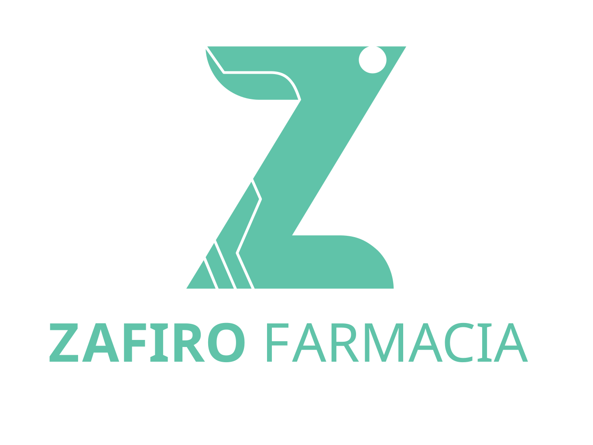
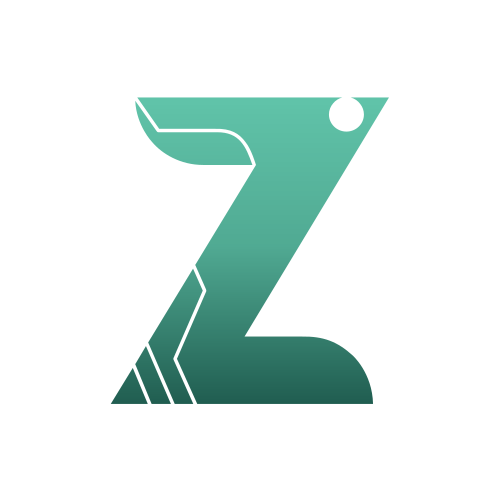
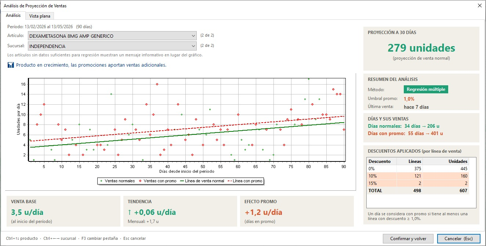
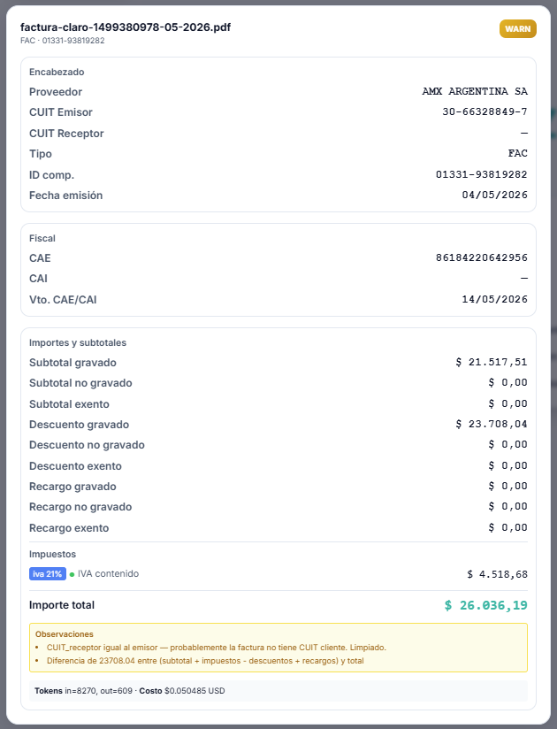
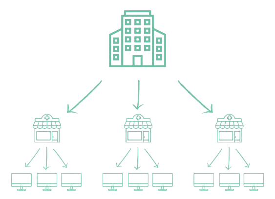

Zafiro Farmacias
Sistema de Gestión Farmacéutico

www.zafirofarmacias.com.ar
Este no es trabajo para un sistema genérico
Zafiro no fue adaptado al rubro farmacéutico. Fue construido para él, desde el día uno.
Operar en Argentina no es fácil.
La inflación cambia el valor del stock constantemente. Los plazos de cobro de obras sociales son largos, pero los pagos no esperan. ARCA y ANMAT exigen cumplimiento exacto, sin margen de error.
En este contexto, quien tarda en tener información, tarda en decidir. Y quien decide tarde, pierde.
Zafiro nació para dar respuestas al sector farmacéutico con estas problemáticas.
ARCA
CAE en el momento. Si ARCA cae, el operador puede cambiar a una caja CAEA para que el punto de venta no se detenga.
Obras Sociales y PAMI
El cajero no calcula nada. El sistema conoce el convenio y aplica el descuento.
ANMAT
Trazabilidad integrada. El registro de ingresos y egresos con lector QR está dentro del mismo sistema, sin herramientas separadas, sin reportes manuales a ANMAT desde otro lado.
Contabilidad
Preasientos por operación, asiento resumen por período. El contador no carga dos veces lo que el sistema ya sabe.
Cuando decimos que Zafiro fue construido para la industria farmacéutica, no es un slogan.
Está integrado con ARCA: el CAE se genera en el momento. Si el servicio de ARCA falla, el sistema puede operar con CAEA, solo con cambiar de caja.
Valida directo con múltiples obras sociales y bonos: los descuentos por convenio se aplican automáticamente en el punto de venta. Sin consultas manuales, sin errores de liquidación.
Cuenta con trazabilidad y serialización integradas para cumplir con el SNT sin intervención del equipo. Y la contabilidad está integrada en cada operación. Todo esto viene incluido. No son módulos opcionales. Ya está adentro.
Seis módulos especializados, un solo sistema. Cada uno hace exactamente lo que su nombre indica: Ventas genera ventas, Compras registra comprobantes, Stock gestiona inventario, Contabilidad lleva los libros, Fondos controla el flujo de caja, Cajas registra cada movimiento en el mostrador.
Lo que los hace poderosos es que todos comparten los mismos datos en tiempo real. Lo que pasa en Ventas lo sabe Contabilidad. Lo que entra en Compras actualiza Stock. Sin transferencias manuales, sin distintas versiones de la verdad.
Podés usar solo los módulos que necesitás. No hay costos adicionales por los que no usás.
Lunes · Sin Zafiro BI
Lunes · Con Zafiro BI
7 a.m. — El reporte del período anterior ya está en tu bandeja.
Si dependés de que vos mismo o alguien más te genere los reportes para poder tomar decisiones, corrés el riesgo de tener tarde la información que necesitás.
Con Zafiro BI, ese riesgo desaparece: podés recibir reportes diarios, cada mañana, con información actualizada desde el día anterior, sobre ventas por sucursal, ticket promedio, familias más vendidas, y otros indicadores, sin tener que pedírselo a nadie ni ponerte a armarlo.
El valor no está solo en tener el dato. Está en tenerlo antes de que empiece el día, para que las decisiones se tomen con información fresca.
01 — Operaciones diarias
Cada módulo va generando datos a medida que se trabaja.
02 — Pre-asientos
Cada operación genera un pre-asiento, simulando el uso de sub-diarios.
03 — Asientos resumen
El libro diario recibe asientos resúmenes por períodos. El contador decide cuándo hacerlos.
04 — Balances contables
Con unos pocos clicks, en formato excel o pdf, cuando el contador lo desee.
El cierre contable no es el resultado de un proceso tedioso de fin de mes. Es la consecuencia natural de haber operado durante el mes.
Modelos de pedido
Centralizado
Desde la Central, hacia las Sucursales.
Distribuido
Pedido desde la Central, entregado por el Proveedor en cada Sucursal.
El mismo sistema soporta los dos modelos. Y pueden coexistir.
Proyección de demanda
Basado en el historial de ventas, con distinción entre ventas normales y promocionales.

Comprar bien no es solo comprar rápido. Es comprar lo correcto, en el momento correcto, con proyecciones basadas en el historial real del propio negocio.
Zafiro cuenta con pronósticos por regresión lineal para estimar cómo va a evolucionar la demanda de cada producto, distinguiendo períodos de precio normal de períodos promocionales.
Para organizar cómo hacer esos pedidos, el sistema soporta dos modelos: pedidos distribuidos, donde cada sucursal compra según su demanda propia, y pedidos unificados, para aprovechar promociones por volumen. El mismo sistema soporta ambos, y pueden coexistir dentro de una misma empresa.
El PDF llega. ZIA lo lee, identifica los productos, los precios, los descuentos, y los precarga en el sistema. El encargado revisa, confirma, y listo.
Sin tipear. Sin errores de imputación. Sin repetir lo que ya está en el documento.
1 semana →
2 horas
Historia real · Cliente de Argentina

El ingreso de facturas de compra es una de las tareas más repetitivas del área de compras: alguien recibe el PDF, lee los datos, los tipea en el sistema, verifica, corrige errores. Esto es lo que ocurre en la mayoría de las empresas, todos los días.
ZIA hace esa parte. Lee la factura directamente desde el PDF o desde un escaneo, identifica los productos, los precios, los descuentos, y los precarga en el sistema. El encargado revisa, confirma, y listo.
Uno de nuestros clientes pasó de dedicar una semana completa al ingreso de facturas a resolverlo en dos horas. Automatizar lo repetitivo permite que el equipo dedique su tiempo a lo que el sistema no puede hacer por ellos.
No reemplazamos lo que ya funciona. Lo conectamos. Los datos fluyen en ambas direcciones.
Mercado Pago
Medios de pago
Tiendastic
eCommerce
Drubbit
eCommerce
Sud
Droguerías / Proveedores
WoowUp
CRM
WIBI
CRM
Akeron
Depósitos y Logística
Monroe
Droguerías / Proveedores
Colfarma
Servicio de validaciones
Farmalink
Servicio de validaciones
IMED
Servicio de validaciones
Suizo
Droguerías / Proveedores
Entre otras, y se sumarán más
Zafiro no reemplaza las herramientas que ya funcionan en el negocio. Las conecta.
Tenemos integraciones con Mercado Pago, WoowUp, Tiendastic, Drubbit, WIBI, Akeron, Sud, Monroe, Suizo, y validación directa con Colfarma, Farmalink e IMED, entre otras. El ecosistema de integraciones sigue creciendo.
Lo importante es que cuando se conecta una herramienta a Zafiro, los datos fluyen en ambas direcciones. Los sistemas se hablan y los datos se centralizan.
Sin Zafiro
Con Zafiro
La integración con PAMI no es un trámite. Es una ventaja comercial.
En Zafiro, contamos con una integración de punta a punta con PAMI.
Por un lado, la validación integrada: cuando llega un afiliado al mostrador, las recetas disponibles se consultan directamente desde Zafiro, sin salir del sistema, sin ventanas adicionales, sin procesos paralelos.
Pero hay algo más valioso todavía: la consulta de recetas sin validación obligatoria. El equipo puede consultar qué recetas tiene disponibles un afiliado antes de que llegue al mostrador. Esto permite tomar decisiones de venta proactivas, y actuar antes de que el cliente tenga que venir a preguntar.

+30
Sucursales
500+
Puestos conectados
+8.5M
Operaciones registradas
Zafiro acompaña el crecimiento sin que el negocio tenga que cambiar de plataforma.
Hoy pueden estar operando con una sucursal y diez puestos. Mañana pueden tener treinta sucursales y quinientos puestos conectados. El sistema es el mismo. No hay migración, no hay reinicio, no hay pérdida de historia operativa.
Y cuando cambia la normativa de ARCA, cuando se lanza una nueva funcionalidad, cuando hay una actualización regulatoria, el sistema se actualiza. Eso no es un servicio adicional ni genera costos adicionales. Nuestro compromiso es mantenerlos al día, cuanto antes, con cada cambio que sea necesario.
Al presionar el botón se abrirá WhatsApp con un mensaje que incluye todos los comentarios que hayas dejado en cada sección.
Si no dejaste ninguno, se enviará un mensaje de contacto genérico.
El botón debe ser presionado para que el mensaje se envíe.
www.zafirofarmacias.com.ar